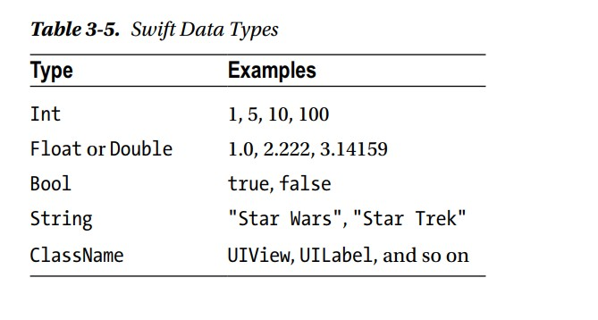

Ahora que hemos discutido cómo las computadoras almacenan datos, cubriremos un concepto importante llamado tipos de datos. Los humanos generalmente solo pueden mirar los datos y el contexto en el que se utilizan para determinar qué tipo de datos que es y cómo se utilizarán. Las computadoras necesitan que se les diga cómo hacer esto. Entonces, el programador necesita decir la computadora el tipo de datos que se le está dando. Aquí hay un ejemplo: 2 + 2 = 4. La computadora necesita saber que desea sumar dos números juntos. En este ejemplo, son enteros. Primero puede creer que agregar estos números es obvio incluso para el observador más casual, y mucho menos un Computadora sofisticada. Sin embargo, es común que los usuarios de aplicaciones iOS almacenen datos como una serie de caracteres, No es un cálculo. Por ejemplo, un mensaje de texto podría leer "Todos saben que 2 + 2 = 4". En este caso, el ejemplo es una serie de caracteres llamados una cadena. Un tipo de datos es simplemente la declaración de su programa que define los datos que desea almacenar. Se utiliza una variable para almacenar sus datos y se declara con un tipo de datos asociado. Todos los datos se almacenan en una variable, y la variable debe tener un tipo de variable. por Por ejemplo, en Swift, las siguientes son declaraciones de variables con sus tipos de datos asociados:
var x: Int = 10
var y: Int 2
var z: Int = 0
var submarine: String = "USS Nevada SSBN-733"
los tipos de datos no pueden combinarse con otros no puedes hacer lo siguientes
z = x + submarineName
La combinación de tipos de datos provocará advertencias del compilador o errores del compilador, y su aplicación no se ejecutará. La Tabla 3-5 proporciona ejemplos de los tipos de datos básicos en Swift.

Las constantes y variables rápidas deben declararse antes de ser utilizadas. Declaras constantes con let palabra clave y variables con la palabra clave var. Las constantes nunca cambian durante el programa, pero las variables sí cambiar durante el programa. Hay dos formas de declarar variables: explícitas e implícitas. Aquí está la sintaxis para declarar explícitamente el tipo de una variable:
var name : type = value
var firstNumber: Int = 5
Sin embargo, declarar el tipo es normalmente opcional, y eliminar el tipo acorta el código y lo hace más fácil porque hay menos código para escribir y mantener. Aquí está la sintaxis para declarar el tipo de una variable implícitamente:
var name : type = value
var firstNumber: Int = 5
Puede usar implícito la mayor parte del tiempo porque Swift es lo suficientemente inteligente como para descubrir cuál es la variable por lo que le asignas. Si una variable no va a cambiar, debe declararla como una constante. Las constantes nunca cambian. Las constantes comienzan con la palabra clave let, como se muestra aquí:
let secondNumber = 10
To best understand how variables and constants are declared, here are two examples:
let maximumNumberOfStudents = 30
var currentNumberOfStudents = 5